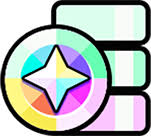
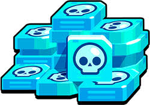
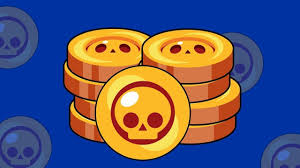

ЩО ТАКЕ Brawl stars

Brawl Stars-( британська вимова: [bɹɔːl stɑːz] ) - гра для мобільних пристроїв у жанрах MOBA і геройський шутер , розроблена та видана фінською компанією Supercell . Глобальний реліз відбувся 12 грудня 2018 року .
У Brawl Stars рейтинг гравців складається з кількості трофеїв (кубків) у кожного гравця в рейтингу, з яких складається загальний рейтинг гравця (як у Clash of Clans, Boom Beach і Clash Royale), а сам ігровий процес нагадує одну зі старих ігор компанії, Battle Buddies. Має багато подібного з Clash Royale. У грі більше 70-ти персонажів, під час бою їх змінювати неможливо. Бравлер Шеллі надається на самому початку геймплею, тоді як інших можна отримати на дорозі Старр або з призів Старр(раніше деяких персонажів можна було отримати при досягненні певної кількості трофеїв). У грі присутні клуби, а також можна створювати кімнати разом з друзями, де можна поспілкуватися та пограти.
Режими гри
Зіткнення ( англ. Showdown ) - режим у жанрі Королівської Битви , що не має тимчасових обмежень. Є 2 типи режиму - одиночний і парний. В одиночному зіткненні перемагає останній, що вижив серед 10 гравців, а в парному — остання команда, що вижила, з 2-х гравців серед 5 команд (теж по 2 гравці). По карті розкидані коробки з кубиками посилення, які підвищують здоров'я та шкоду гравця, а також згодом карта звужуватиметься до центру отруйними хмарами, що завдають зростаючої шкоди гравцям кожну секунду .
Броулбол ( англ. Brawlball ) - режим 3 на 3 гравці, де головне завдання - забити 2 голи у ворота противників, керуючи для цього спеціальним м'ячем. Якщо не було забито другого гола, то перемагає команда з великим рахунком. Якщо рахунок рівний, то гравцям дається 1 хвилина для забивання гола, проте перешкоди на карті будуть зруйновані. Якщо за додатковий час жодна команда не зможе забити гол, гравцям присвоюється нічия.
Нокаут ( англ. Knockout ) - режим 3 на 3 гравці, де головне завдання - перемогти у двох раундах, кожен з яких триває максимум по 1 хвилині. Та команда, в якій не залишилося гравців або залишилося менше, ніж у протилежній програє, якщо після закінчення часу гравців однаково в обох командах, раунд виграє та команда, яка завдала більше втрат.
Також є дві пари режимів, що поперемінно чергуються між собою:Пограбування ( англ. Heist ) - Режим 3 на 3 гравця, де головне завдання - знищити сейф ворогів, захищаючи власний. Якщо з часом жоден із сейфів не буде знищений, то перемагає та команда, у якої здоров'я сейфу вище за вороже. Якщо з часом обом сейфам було завдано однакових збитків у відсотках, то гравцям присвоюється нічия .
Гаряча зона ( англ. Hot Zone ) - режим 3 на 3 гравця, де головне завдання - якомога більше часу стояти на точці, тим самим захоплюючи її. Перемагає та команда, яка набрала 100%, шляхом захоплення всіх або однієї точки.
Нагорода за впіймання ( англ. Bounty ) - режим 3 на 3 гравця, де головне завдання - заробити якомога більше зірок, ніж у противників. Зірки заробляються шляхом вбивства супротивника. На початку гри у центрі карти є додаткова зірка. Коли один із гравців вбиває іншого, то до рахунку гравця додається зірка. Кількість зароблених зірок визначає нагороду за вбивство гравця, після якого кількість зірок обнулюється .
Облога ( англ. Siege , видалений з гри 31 серпня 2022) - режим 3 на 3 гравця, де головне завдання - знищити базу противника. Відмінність цього режиму від «Пограбування» виявляється у можливості бази самостійно оборонятися від супротивників, що у зоні її действия. З початку гри у центрі карти з'являються болти. Команда, що зібрала більше болтів за відведений час, зможе закликати собі на допомогу робота, який йде до ворожої бази, попутно борючись із супротивниками. Чим більше болтів збере команда, тим сильніший робот.
Дуелі ( англ. Duels ) - в даному режимі гравці вибирають по 3 бійці, за яких боротимуться один з одним. Виграє той гравець, який переміг трьох бійців супротивника.
Навантаження ( англ. Payload , видалений з гри 27 квітня 2022) - режим, в якому кожна команда має один корисний вантаж, який вони повинні довести до кінця рейок. Виграє та команда, яка доштовхне свій вантаж до фінальної мети.
Зачистка ( англ. Wipeout ) - У цьому режимі беруть участь дві команди, що складаються з трьох гравців кожна. Мета - знищити противників 8 разів, не давши противнику зробити те саме. Коли одна команда вчиняє 8 вбивств, вона перемагає. Через 2 хвилини, якщо обидві команди не змогли знищити 8 супротивників, перемагає та команда, яка має більше вбивств. Якщо обидві команди мають однакову кількість вбивств, матч закінчується внічию.
Баскетбой ( англ. BasketBrawl ) - режим 3 на 3, в якому треба потрапити м'ячем в кільце, яке постійно рухається. У цьому режимі найменші карти у грі. Грають у цьому режимі до 5 очок. За потрапляння за лінією – 3 очки, після лінії – 2 очки.
Волейбою ( англ. VolleyBrawl ) - режим 3 на 3, в якому потрібно вдарити по м'ячу щоб він впав на бік супротивника. Грають у цьому режимі до двох очок. За влучення - 1 очко.
Захоплення кристалів ( англ. Gem Grab ) - режим 3 на 3 гравця, де потрібно збирати кристали, які з'являються кожні 7 секунд із шахти. При вбивстві противника гравцем всі кристали противника випадають на землю і можуть бути підібрані будь-яким іншим гравцем. Індикатори обох команд відображають суму кристалів, що є у всіх учасників на даний момент. Завдання кожної команди - зібрати 10 або більше кристалів, після чого протримати їх до кінця гри. Коли команда збере 10 кристалів, почнеться відлік остаточно гри. Цей відлік можна перервати, якщо відібрати у ворожої команди необхідну частину кристалів, вбиваючи її учасників, або зібравши однакову з ворожою командою кількість кристалів. Після відведених до кінця 15 секунд перемога присуджується команді з найбільшою кількістю кристалів .
Додатково існує режими, які з'являються у вихідні:Бій з босом ( англ. Boss Fight ) - у цьому режимі треба знищити робота-боса, а також оборонятися від його міньйонів. Складність збільшується з кожним пройденим рівнем складності;
Роборубка ( англ. Robo Rumble ) - в даному режимі необхідно захищати сейф від роботів, які з кожним зростанням хвилі стають сильнішими. Як і Бій із босом, складність збільшується з кожною перемогою;
Велика гра ( англ. Big Game ) - режим, в якому 5 гравців намагаються знищити іншого гравця, Мегабійця, який має багато очок здоров'я і величезну шкоду. Якщо за 2 хвилини гравці переможуть Мегабійця, то перемога дістанеться їм, а якщо Мегабоєць протримається\ такий час – переможе він.
Режими, які видалили з гри
В 2021 році в одному з оновленнь додали Силову Лігу для гравців з гарними навичками гри. Режим підбирав випадковим чином 3v3 режим і локацію, 3 суперників і 2 тімейтів. Кожна сторона забороняла обирати трьох персонажів для гри. Після обрання персонажу ви могли змінити гаджет, знарядження або старпавер, які б вам допомогли у бою. Задача гравця була перемогти разом з командою 2 раунди, це рахувалось за перемогу, і вам давали 75-150 спеціальних очок, за 500 таких яких ви переходили у наступний етап і гравцю давали 125 блінгів. Цей режим був видалений у березні 2024 року, і як казали у черговому відео новин Brawl Talk, його замінить Ранговий Бій. Засада - режим, де потрібно було збирати болти для покращення робота, який буде руйнувати сторону суперника Даний режим було видалено в одному з оновленнь 2021 року Дуелі - режим в якому гравець обирав 3 персонажів, якими він зіграє даний матч проти гравця, який так само обере 3 персонажів. Далі гра розбивається на 3-5 раундів і задача гравця перемігти свого суперника кожним персом 3 рази. У разі перемоги кожному персонажу додається 2-4 трофеї, а у разі програшу - віднімались.
ІГРОВА ВАЛЮТА
Монети — потрібні для придбання очок сили, зоряних сил, гаджетів,гіперзарядів і покращення персонажів, також з оновленням «Літо Монстрів» можна придбати Срібні й Золоті скіни
Кристали — їх можна отримати за проходження сезонів Brawl Pass або купити в магазині за реальну валюту. Потрібні для покупки скінів, монет і додаткових шансів у випробуваннях.
Блінґи — валюта, що використовується для купівлі скінів, емодзі, спреїв та іконок профілів. Блінґи можна отримати в кінці кожного сезону Трофейної ліги, за кожні 5 досягнутих рангів (починаючи з 10-го), у рангах Силової ліги, у преміальному Brawl Pass, у квестах і випробуваннях. Також за блінґи можна придбати різні скіни, спреї та емодзі в Каталозі.
Клубні монети - (ця валюта більше не існує у грі)валюта, за яку у Клубному Магазині можна купувати скіни, спорядження, монети та деталі споряджень. Отримати їх можна лише в кінці сезону Ліги Клубів, який триває з середи по понеділок. Чим вища ваша Ліга (Бронзова ІІІ, Срібна І) – тим більше ви зможете отримати монет. Нарахування рахується по витраченим білетам.
Білети та Золоті білети - (ця валюта більше не існує у грі) валюти, за допомогою яких можна зіграти у Лігу Клубів. Білети оновлюються кожного дня подій (середа, п'ятниця, неділя). А от Золоті білети ви можете придбати за зоряні очки та кристали. 1 Золотий білет коштує 75 зоряних очків або 5 кристалів, а цілий набір із 4 Золотих білетів за 15 кристалів. Максимум за 1 сезон можна придбати до 4 Золотих білетів (раніше був баг, при якому можна було придбати 5 і більше).
Кредити та Хромокредити (англ. Credits and Chrome Credits) - одні з ігрових валют, які були додані в грудневому оновленні 2022 року. Кредити використовуються для розблокування бійців на Дорозі Стар, а Хромокредити - (ця валюта більше не існує у грі) для розблокування бійців з хроматичною рідкістю. Кредити та Хромокредити можна отримати за допомогою Призів Стар або Brawl Pass. Хромокредити були видалені в грудневому оновленні 2023 року, разом з хроматичною рідкістю.
Ви можете завантажити Brawl Stars і грати безкоштовно, але деякі ігрові предмети продаються за реальні гроші (наприклад кристали). Також іноді в магазині роблять акції. Якщо ви не хочете користуватися цією можливістю, ви можете вимкнути вбудовані покупки в налаштуваннях вашого пристрою. Відповідно до політики «Brawl Stars», користуватися грою можуть лише особи, старші 9 років. Зіркові очки (англ Star points, ця валюта більше не існує в грі). Валюта за яку можна було купляти скіни і скриньки. Цю валюту можна було отримувати в кінці кожної трофейної ліги, але при цьому втрачались трофеї. На заміну прийшли Блінґи.   Успіх
За перший тиждень, після офіційного релізу гри, вона заробила більше п'яти мільйонів доларів, а сам додаток завантажили більше, ніж 9,5 мільйонів користувачів.Нажаль, гра зазнала падіння успіху в 2022 році після видалення Боксів, багато старих гравців покинули гру.А з падінням яке сталося, прийшла заміна Стар дропи які поки не набули успіху.
ОБ'ЄДНАННЯ ГРАВЦІВ У РЕЖИМІ
Під час бета-релізу виникла проблема: гравці часто (особливо на високих рангах) об'єднувалися у режимі «Зіткнення». Кожен, хто крутився персонажем навколо своєї осі, показував свою готовність «стати побратимом у бою»: гравці могли не вбивати один одного, доки вони не задихнуться в отруйному тумані, або не залишуться сам на сам. Це викликало обурення у деяких гравців. Найчастіше такі команди складалисяся з метальників (Барлі і Динамайк), у яких доволі мало здоров'я, та вони завдають багато шкоди (damage). Потім обєєднуватись ствли всі персонажію 24 серпня 2018 року розробники висловилися, що вони проти «тімінгу» та запустили хештег — #StopTheSpin (У перекладі з англ. «Перестаньте крутитися») На одній із карт режиму Захоплення кристалів, можна знайти лопату Мортіса, яка лежить біля труни, на якому написано «Spinner» (з англ. «Спінер»), біля якої також лежать каска та шашка Динамайка. У серпневому оновленні було тимчасово додано режим "Зіткнення+", у якому за кожне вбивство давали +1, з наступними оновленнями +2 кубки. Аналогічно відбувається з поразкою. Режим діяв до кінця 8 сезону.
МІЙ ID У БРАВЛ СТАРС: QYYCU28CR